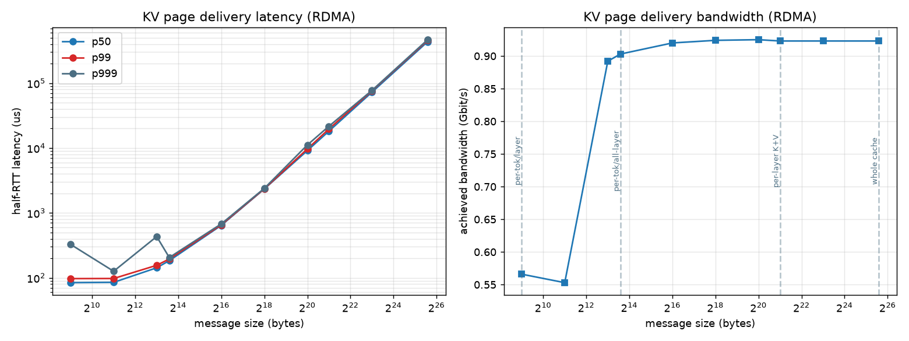
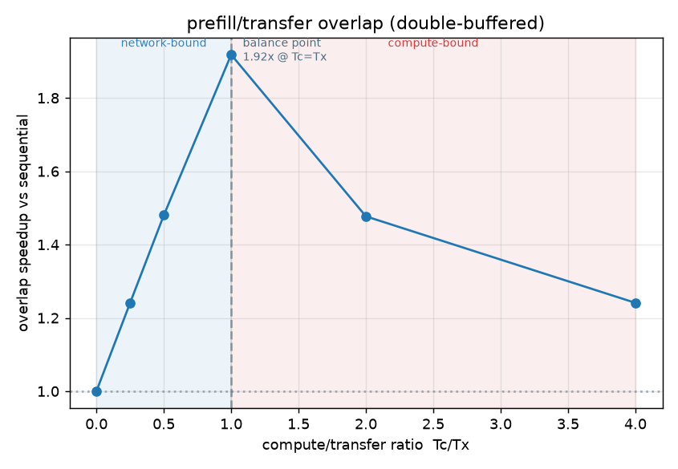
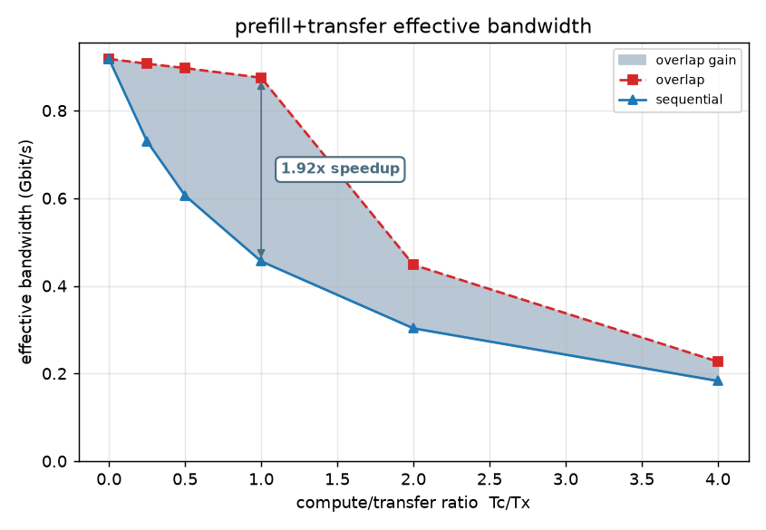

RDMA over Ethernet (RoCE) for Disaggregated Inference
Motivation
Modern inference providers use disaggregation to separate prefill and decode onto separate nodes. After the prefill server computes the KV cache, it typically uses RDMA over high-speed network fabric to push tensors to the decode node.
I built a Linux tool from scratch in C to get first-hand numbers on design tradeoffs between memory and network. Is it more efficient to chunk the KV cache and offload it in tiny pieces, or move the whole thing at once? If we parallelize the prefill compute and network move, how much can we speed up the entire process? These design choices affect both bandwidth efficiency and Time to First Token on the decode side.
A prior project characterized the memory and compute tradeoffs (see roofbench, GPU roofline and ridge point); this one describes the data plane of disaggregated prefill/decode across compute and network axes.
Setup
I used two Linux servers with gigabit Ethernet and Soft-RoCE (rdma_rxe kernel driver) bound to the physical interfaces. Verbs in C allow for TCP bootstrap (QPN / rkey / GID), queue pair through INIT → RTR → RTS, and one-sided RDMA WRITE. The payload: Qwen KV cache tensors — 24 layers @ fp16, 4,096 tokens, 2 attention heads, and 64 dimensions. Total 48 MB of data, extracted in a prior project (kvmix, KV-cache mixed-precision quantization).
Because rdma_rxe runs the RoCE protocol in software over the kernel network stack, absolute numbers here are limited by protocol overhead rather than fabric behavior. A shift from Soft-RoCE to an RNIC and network fabric changes the limits, but the shape of the chunking curve, the verbs programming model, and the overlap math stay the same.
Implementation notes
Memlock. Default Linux settings limit pinned memory to 8 MiB. RDMA requires large buffers that can't be paged out. In ibverbs this manifests as an ibv_reg_mr() failure for memory alloc on pd/cq/mr. Fix: adjust systemd DefaultLimitMEMLOCK and/or limits.conf to 256 MiB. Verify with ulimit -l.
RNR infinite hang. RDMA uses WRITE_WITH_IMM, which consumes a recv on the responder's RQ. If the responder has not yet posted a recv, error RNR NAK (receiver not ready). rnr_retry=7 is the "retry forever" value, so the client retries forever, no error surfaced, hang. Fix: for both sender and receiver, pre-post a recv before either side issues an IMM.
QP state machine. RESET → INIT → RTR → RTS via ibv_modify_qp. If the attr mask isn't perfect and the modify no-ops the transition, there's no error, but connect fails.
GID / RoCE v2. IB tutorials use addressing by LID + is_global=0. Paste that into rxe and it won't connect. RoCE has no subnet manager and no LID; it addresses by GID. Fix: pick v2 in the port's GID table, set is_global=1, and fill the GRH with the remote GID. Verify with ibv_devinfo -v.
PCIe probe: no bus for rxe. --probe reads the NIC's PCIe link from sysfs (speed / width / BDF / NUMA) and computes a DMA payload max. But rxe is a software device with no PCIe function. Fix: hop rxe0 → parent → netdev → /sys/class/net/<nd>/device.
Experiment 1: data chunking during RDMA
I test RDMA WRITE of the 48 MB cache at four granularities:
per-token-per-layer 1 tok × 2 heads × 64 d × 2 (K&V) = 512 B
per-token-all-layers = 12 KB
per-layer = 2 MB
whole cache = 48 MB
Latency. The p50 floor is ~85 µs. This is the rxe and software-stack cost. p50 and p99 converge at large message sizes as transfers become bandwidth-dominated. The p999 spikes at small sizes are likely scheduling jitter, since rxe rides the kernel network stack. On production hardware, that tail is the concern for per-token streaming.
Bandwidth. The knee lands around 213 bytes (~8 K), so the smallest natural streaming unit (per-token-all-layers granularity, 12 K) sits just past it, on the saturated shelf. Below the knee, per-WQE posting and overhead dominate every byte. Above it, the wire dominates and throughput saturates at ~0.93 Gbit/s, the practical ceiling of the GbE link reached through the RDMA stack.
Takeaway: Minimum viable granularity for streaming KV during prefill is a full token's KV across all layers (12 KB). Larger chunks delay the TTFT without adding much bandwidth. On this link, 12 KB is the goldilocks chunking size for disaggregated inference.
Experiment 2: overlap transfer with compute
Prefill builds KV by layer, which is then sequentially offloaded in the naive case. To further increase utilization, I overlap prefill and offload: transfer layer N while computing layer N+1. Split the RDMA buffer into A and B:
- Producer (prefill compute, emulated here) fills buffer A for chunk N+1
- NIC sends chunk N from buffer B
- Then swap buffers for the next layer
This is similar to GPU pipelines with ping-pong staging buffers. Time per stage goes from Tc + Tx (sequential) to max(Tc, Tx). Classic two-stage pipeline math.


Both limits behave according to the math. As Tc → 0 (left side), the wire is the whole story and overlap can't help. As Tc → ∞ (right side), the transfer hides entirely under compute and speedup decays to 1. The overlap peak sits at Tc = Tx.
The ridge point is useful as a diagnostic rather than a target. Every disaggregated inference deployment, big frontier lab or small Mac cluster, falls somewhere on this curve. If network-bound (left side), kernel optimization is wasted effort. If compute-bound (right side), a network upgrade is setting money on fire. Same role as the roofline ridge point, in that it classifies bottlenecks.
Limitations
I built and ran these tools over standard Ethernet NICs and Soft-RoCE, in which the Linux kernel provides CPU-mediated RDMA. A shift up to RNICs and high speed would drop the latency floor and remove the CPU from the data path. The small-chunk overhead knee moves left, as the per-WQE costs are lower but nonzero. Production inference deployments use lossless Ethernet, where congestion control and buffer management are key challenges.
Implications
Granularity selection for the KV cache in disaggregated inference presents tradeoffs. Per-token streaming gives the decode node a quick response but with a bandwidth-utilization penalty. Serving systems with TTFT SLOs may happily pay this cost.
The ridge-point framing gives an infrastructure team a straight answer to "should we buy network or optimize kernels?" KV compression (see kvmix) and this KV transport problem can be viewed as the same optimization from opposite ends.